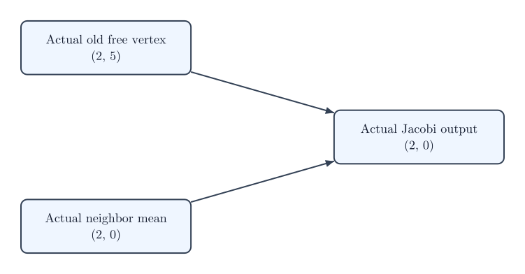
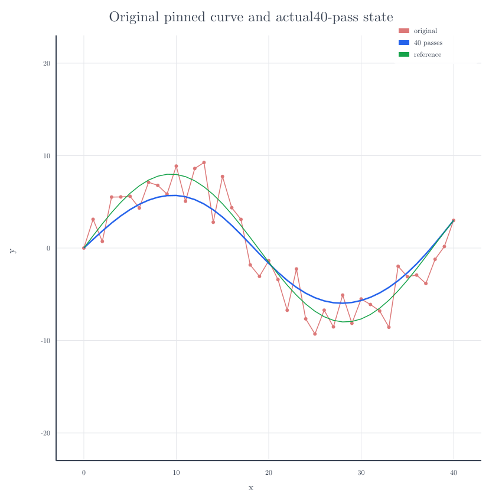
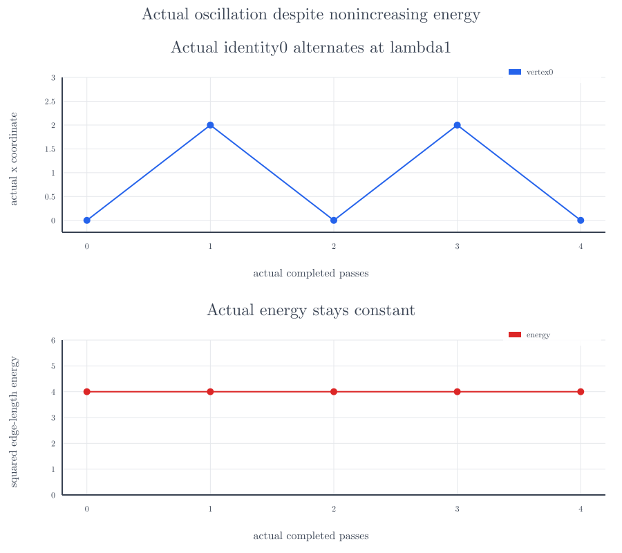
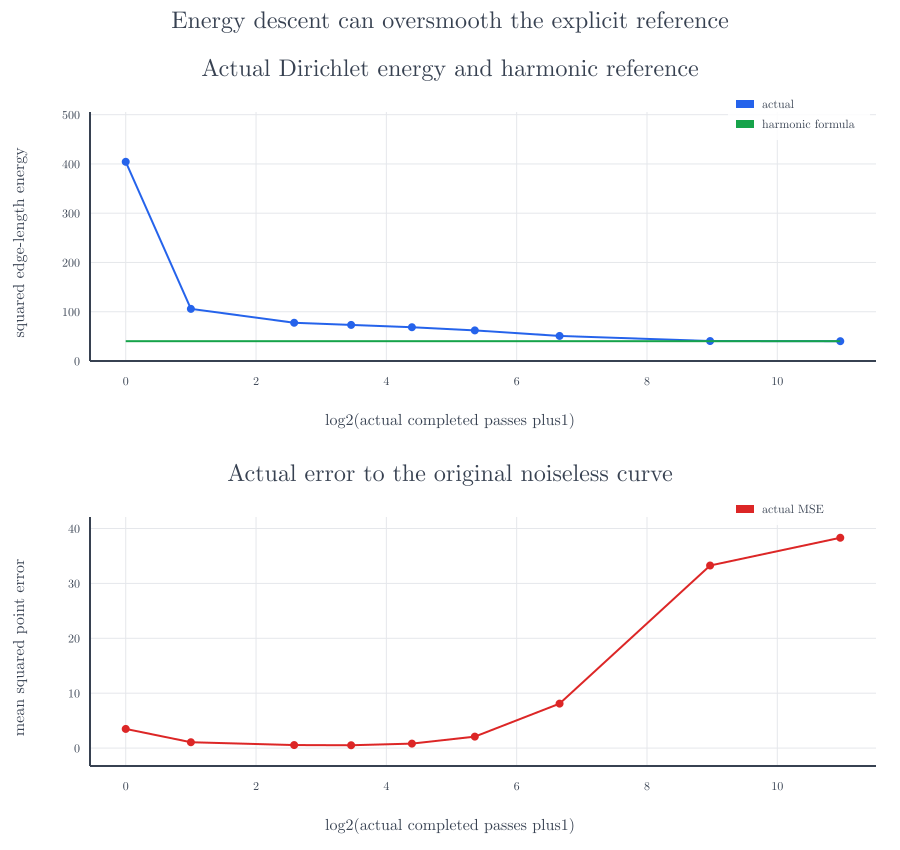

Laplacian smoothing through actual Jacobi states
Abstract
Smoothing graph-embedded vertices replaces local irregularity by movement toward neighboring positions. That can reduce graph Dirichlet energy while also shrinking geometry, oscillating at an extreme relaxation value, or increasing error against a noiseless reference after too many passes. We inspect actual synchronous centroid updates, retain the original41-point pinned curve and40-pass result, and contrast energy descent with convergence and truth preservation. Undirected reciprocal adjacency is checked before the energy argument is used.
The actual synchronous update
For each free nonisolated vertex, compute the neighbor mean from the complete old state and write
Pinned and isolated points stay fixed. All updates read the old state, so this is Jacobi relaxation, not a sweep that immediately reuses an earlier vertex’s new position. Duplicate neighbors count by multiplicity and self-loops participate in the average. The complete graph must have reciprocal multiplicities; otherwise the following undirected energy interpretation does not apply. Missing suffix pin flags mean free vertices, preserving the historical short-mask convention.
For one coordinate, let L be the symmetric graph Laplacian and D the diagonal neighbor-count matrix on nonisolated free vertices. Undirected energy is E=xT L x, summing each edge once; pinned displacements are zero. The update displacement is delta=−lambda*D-1*g with g the free-coordinate energy-gradient factor Lx. Since L<=2D as quadratic forms,
Apply this to both coordinates. This is an exact-arithmetic energy argument, not an exact floating-point certificate or a mesh-untangling/shape-quality proof. At lambda1 the bound need not be strict, and an unpinned bipartite graph can alternate forever. A pinned graph can converge toward a harmonic embedding that differs substantially from the desired underlying curve.
One actual pinned-centroid update
Use points(0,0),(2,5),(4,0) on a path, pin both endpoints and set lambda1. The only free point moves to the actual neighbor mean(2,0); exact energy falls from58 to8. Every displayed value below is captured from that producing native pass.
#include <dm/dm.hpp>
int main() {
std::filesystem::create_directories("build");
const auto t =
dm::geometry::laplacian_smooth_trace({{0, 0}, {2, 5}, {4, 0}},
{{1}, {0, 2}, {1}}, {1, 0, 1}, 1, 1);
std::print("| actual pass | original free vertex | neighbor reads | old x | old y | actual centroid x | " "actual centroid y | actual new x | actual new y |\n| ---: | ---: | ---: | ---: | ---: | " "---: | ---: | ---: | ---: |\n");
for (const auto &e : t.updates)
std::print("| {} | {} | {} | {} | {} | {} | {} | {} | {} |\n",
e.iteration, e.vertex, e.neighbor_count, e.before.x,
e.before.y, e.centroid.x, e.centroid.y, e.after.x, e.after.y);
std::print("\nActual original energy {}; actual final energy {}.\n",
t.energies.front(), t.energies.back());
const auto &e = t.updates.front();
dm::graphics::Diagram d;
d.node("old", {0, 2},
std::format("Actual old free vertex\n({}, {})", e.before.x,
e.before.y)).node("neighbors", {0, -2},
std::format("Actual neighbor mean\n({}, {})",
e.centroid.x, e.centroid.y)).node("new", {7, 0}, std::format("Actual Jacobi output\n({}, {})", e.after.x, e.after.y)).edge("old", "new").edge("neighbors", "new").save_svg("build/laplacian_centroid.svg");
}| actual pass | original free vertex | neighbor reads | old x | old y | actual centroid x | actual centroid y | actual new x | actual new y |
|---|---|---|---|---|---|---|---|---|
| 0 | 1 | 2 | 2 | 5 | 2 | 0 | 2 | 0 |
Actual original energy 58; actual final energy 8.

Original noisy curve with pinned endpoints
Retain41 vertices x=i, base y=8*sin(i/6), mt19937 seed42 and uniform[−3,3) perturbations only on the39 interior y coordinates. The path connects consecutive vertices, both endpoints are pinned, lambda is0.5 and the original output is the actual40-pass state. Standard-library uniform mappings are implementation-specific; the precise original generator order is preserved. The noiseless base curve is an added reference for this synthetic experiment, not a general graph-smoothing target.
The native trace performs one complete40-pass run and captures each real state/energy. Selected rows below read that actual history rather than rerunning every prefix. Equal coordinate scales keep the geometric curve honest.
#include <dm/dm.hpp>
int main() {
std::filesystem::create_directories("build");
const auto d = dm::geometry::laplacian_demo_curve();
const auto t =
dm::geometry::laplacian_smooth_trace(d.vertices, d.neighbors, d.fixed,
.5, 40);
std::print("| actual completed passes | actual Dirichlet energy | actual mean squared point error to " "noiseless reference | original endpoints unchanged |\n| ---: | ---: | ---: | --- |\n");
for (std::size_t i : {0, 5, 10, 20, 40})
std::print("| {} | {:.12f} | {:.12f} | {} |\n", i, t.energies[i],
dm::geometry::laplacian_point_mse(t.states[i], d.reference),
t.states[i].front() == d.vertices.front() &&
t.states[i].back() == d.vertices.back());
std::print("\nActual sweeps {}; actual free updates {}; neighbor-point reads {}; pinned skips {}; " "additional energy-edge evaluations {}.\n",
t.work.sweeps, t.work.updated_vertices, t.work.neighbor_reads,
t.work.pinned_skips, t.work.energy_edges);
std::vector<double> x, noisy, smoothed, truth;
for (std::size_t i = 0; i < d.vertices.size(); ++i) {
x.push_back(d.vertices[i].x);
noisy.push_back(d.vertices[i].y);
smoothed.push_back(t.result[i].y);
truth.push_back(d.reference[i].y);
}
auto p = dm::graphics::RPlot::create();
p.line(x, noisy, "original", {220, 120, 120}, 1.5).points(x, noisy, "",
{220, 120, 120}, 3).line(x, smoothed, "40 passes", {37, 99, 235}, 2.5).line(x, truth, "reference", {22, 163, 74}, 1.5).size(850, 850).margins(95, 35, 60, 70).x_limits(-3, 43).y_limits(-23, 23).title("Original pinned curve and actual40-pass state").x_label("x").y_label("y").save_svg("build/laplacian_original.svg");
}| actual completed passes | actual Dirichlet energy | actual mean squared point error to noiseless reference | original endpoints unchanged |
|---|---|---|---|
| 0 | 404.349544935026 | 3.490134893847 | true |
| 5 | 77.608127801012 | 0.549417219661 | true |
| 10 | 73.243062571134 | 0.515211603134 | true |
| 20 | 68.545253495600 | 0.813345121163 | true |
| 40 | 62.109781654355 | 2.088178050159 | true |
Actual sweeps 40; actual free updates 1560; neighbor-point reads 3120; pinned skips 80; additional energy-edge evaluations 1640.

Nonincreasing energy can accompany oscillation or collapse
On a single unpinned edge with coordinates0 and2, lambda1 swaps the two endpoint identities each pass. Energy stays4, so energy descent alone does not prove convergence. Lambda0.5 instead collapses both positions to1 in one pass, with energy0; that is not a shape-preservation guarantee. Both controls use complete actual native trajectories.
#include <dm/dm.hpp>
int main() {
std::filesystem::create_directories("build");
const auto t =
dm::geometry::laplacian_smooth_trace({{0, 0}, {2, 0}}, {{1}, {0}}, {},
1, 4);
std::vector<double> x, y, e;
std::print("| actual completed passes | actual vertex0 x | actual vertex1 x | actual energy |\n| ---: | " "---: | ---: | ---: |\n");
for (std::size_t i = 0; i < t.states.size(); ++i) {
std::print("| {} | {} | {} | {} |\n", i, t.states[i][0].x,
t.states[i][1].x, t.energies[i]);
x.push_back(i);
y.push_back(t.states[i][0].x);
e.push_back(t.energies[i]);
}
const auto c =
dm::geometry::laplacian_smooth_trace({{0, 0}, {2, 0}}, {{1}, {0}}, {},
.5, 1);
std::print("\nActual lambda0.5 single-pass coordinates {}, {}; actual energy {}.\n",
c.result[0].x, c.result[1].x, c.energies.back());
auto p = dm::graphics::RPlot::create(), q = dm::graphics::RPlot::create();
p.line(x, y, "vertex0", {37, 99, 235}, 2).points(x, y, "", {37, 99, 235}, 5).y_limits(-.25, 3).title("Actual identity0 alternates at lambda1").x_label("actual completed passes").y_label("actual x coordinate");
q.line(x, e, "energy", {220, 38, 38}, 2).points(x, e, "", {220, 38, 38}, 5).y_limits(0, 6).title("Actual energy stays constant").x_label("actual completed passes").y_label("squared edge-length energy");
dm::graphics::RLayout::create(2, 1).add(p).add(q).size(900, 800).title(
"Actual oscillation despite nonincreasing energy").fit_panels().save_svg("build/laplacian_oscillation.svg");
}| actual completed passes | actual vertex0 x | actual vertex1 x | actual energy |
|---|---|---|---|
| 0 | 0 | 2 | 4 |
| 1 | 2 | 0 | 4 |
| 2 | 0 | 2 | 4 |
| 3 | 2 | 0 | 4 |
| 4 | 0 | 2 | 4 |
Actual lambda0.5 single-pass coordinates 1, 1; actual energy 0.

Oversmoothing the original reference
Perform one complete2000-pass trajectory on the original pinned curve and read selected actual states. The harmonic path minimizing exact edge energy between the fixed endpoints is a straight segment, with energy squared endpoint displacement divided by40. That mathematical reference is not a promise of closeness to the original sinusoid. The panels separate actual energy from mean squared point error to that explicit noiseless curve. A log2(passes+1) horizontal coordinate includes pass0 without a fabricated floor.
For each completed pass, a free nonisolated vertex reads its full neighborhood once. Work counters count actual sweeps, updates, pinned/isolated skips and neighbor-point reads; trace-only energy diagnostics are counted separately. Full validation checks reciprocal multiplicities in O(E log(E+1)); subsequent I-pass smoothing costs O(I*(n+E)) with two old/new state buffers. Capturing every state/update and energy adds real memory and diagnostic work.
#include <dm/dm.hpp>
int main() {
std::filesystem::create_directories("build");
const auto d = dm::geometry::laplacian_demo_curve();
const auto t =
dm::geometry::laplacian_smooth_trace(d.vertices, d.neighbors, d.fixed,
.5, 2000);
const double dx =
d.vertices.back().x - d.vertices.front().x, dy =
d.vertices.back().y - d.vertices.front().y;
const double harmonic = (dx * dx + dy * dy) / (d.vertices.size() - 1);
std::vector<double> x, e, error;
std::print("| actual completed passes | actual state energy | actual mean squared point error | " "harmonic energy formula, exact-arithmetic reference |\n| ---: | ---: | ---: | ---: |\n");
for (std::size_t i : {0, 1, 5, 10, 20, 40, 100, 500, 2000}) {
const auto mse =
dm::geometry::laplacian_point_mse(t.states[i], d.reference);
std::print("| {} | {:.12f} | {:.12f} | {:.12f} |\n", i, t.energies[i],
mse, harmonic);
x.push_back(std::log2(double(i) + 1));
e.push_back(t.energies[i]);
error.push_back(mse);
}
auto p = dm::graphics::RPlot::create(), q = dm::graphics::RPlot::create();
p.line(x, e, "actual", {37, 99, 235}, 2).points(x, e, "", {37, 99, 235}, 4).line({x.front(), x.back()}, {harmonic, harmonic}, "harmonic formula", {22, 163, 74}, 2).y_limits(0, e.front() * 1.25).title("Actual Dirichlet energy and harmonic reference").x_label("log2(actual completed passes plus1)").y_label("squared edge-length energy");
q.line(x, error, "actual MSE", {220, 38, 38}, 2).points(x, error, "",
{220, 38, 38}, 4).title("Actual error to the original noiseless curve").x_label("log2(actual completed passes plus1)").y_label("mean squared point error");
dm::graphics::RLayout::create(2, 1).add(p).add(q).size(900, 850).title(
"Energy descent can oversmooth the explicit reference").fit_panels().save_svg("build/laplacian_oversmoothing.svg");
}| actual completed passes | actual state energy | actual mean squared point error | harmonic energy formula, exact-arithmetic reference |
|---|---|---|---|
| 0 | 404.349544935026 | 3.490134893847 | 40.223982629341 |
| 1 | 105.825993008736 | 1.064366711363 | 40.223982629341 |
| 5 | 77.608127801012 | 0.549417219661 | 40.223982629341 |
| 10 | 73.243062571134 | 0.515211603134 | 40.223982629341 |
| 20 | 68.545253495600 | 0.813345121163 | 40.223982629341 |
| 40 | 62.109781654355 | 2.088178050159 | 40.223982629341 |
| 100 | 50.863985132126 | 8.098292282457 | 40.223982629341 |
| 500 | 40.499209434721 | 33.260316240919 | 40.223982629341 |
| 2000 | 40.225980938093 | 38.317763045816 | 40.223982629341 |

Scope and verification
The complete input graph has finite points, exactly n adjacency rows and reciprocal endpoint multiplicities, with n<=INT_MAX, pin-mask length at most n, finite lambda in[0,1] and nonnegative iterations. Ordinary finite double centroid/update order is preserved; widened parallel sums and convex-blend fallbacks avoid some intermediate overflow, but produced finite-coordinate and energy ranges remain checked. Trace energy uses long double; the historical standalone energy API requires a finite double result. No face topology, orientation, area or reference-truth invariant is inferred.
All states, updates and graph data are owned actual outputs. Complete capture admission counts2*n+E+1 initial records plus iterations*(n+1+R) for R free nonisolated updates per pass, before copies or smoothing. The million-entry default excludes coordinate fields, capacities, final-result/runtime copies and bytes/RAM; zero disables only that optional cap. No repeated-prefix smoothing constructs the history.
Independent NumPy neighbor updates and energy sums verified100 graph studies
and600 actual states. Another500 complete ordinary smoothing paths matched
frozen trajectories exactly. Native tests exhaust64 four-vertex graphs,16 pin
masks and four relaxation values, and retain original pinned-curve, oscillation,
collapse, oversmoothing, reciprocal/loop/duplicate, finite-range and ownership
controls. The complete ten-report batch passed77 native CTest cases,39 directly
instrumented ASan/UBSan cases,106 compiled/executed public examples,479/479
scoped definitions and ten representative clangd hovers. All4 complete report
programs executed and all4 native figures were visually reviewed. HTML/Markdown
computed result and identical source/build/export figure bytes passed
verification. Repeatable receipts are retained under
build/mepml-conversion/batch-194-203/.
References
G. Taubin(1995), A Signal Processing Approach to Fair Surface Design, SIGGRAPH1995,351–358. This report uses a single-sign umbrella relaxation, explicitly distinct from the paper’s shrinkage-reducing filter construction; energy descent alone is not attributed shape-preservation or universal truth-error guarantees.